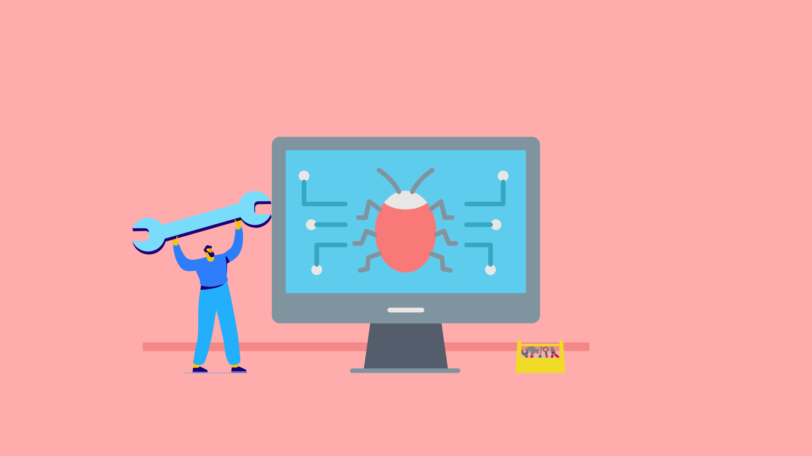

Tema 1: Desarollo web
Creado y publicado el 04 de mayo

El desarrollo web es el proceso de creación y mantenimiento de sitios web. Los especialistas en desarrollo web son aquellos que se encargan de que los websites y las apps funcionen correctamente, sean eficientes, tengan dinamismo y buena organización. Se trata de un trabajo que implica colaborar con otros actores en la creación de sitios web y herramientas digitales, incluyendo a diseñadores gráficos, responsables del contenido y expertos en posicionamiento en buscadores, entre otros.
Tema 2: Informatica
Creado y publicado el 04 de mayo
La informática o computación es la ciencia que estudia los métodos y técnicas para almacenar, procesar y transmitir información de manera automatizada, y más específicamente, en formato digital empleando sistemas computarizados.No existe realmente una definición única y universal de lo que la informática es, quizá porque se trata de una de las ciencias de más reciente origen, aunque de desarrollo más vertiginoso y desenfrenado.